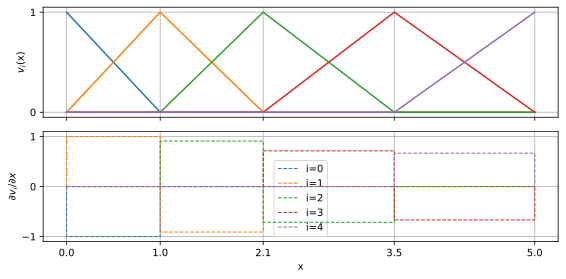

3 Finite Elements
3.1 History and background
- [1943] Courant: Variational Method
- [1956] Turner, Clough, Martin, Topp: Stiffness
- [1960] Clough: Finite Elements for static elasticity
- [1970-80] extension to structural, thermic and fluid dynamics
- [1990] computational improvements
- now main method for almost all PDE types
Geophysics: Poisson equation in 1970s, revival in 1990s and predominant in 2000s up to now
3.2 Variational formulation of Poisson equation
\[ -\div a \grad u = f \]
Multiplication with test function \(w\) and integration \(\Rightarrow\) weak form
\[ -\int_\Omega w \div a \grad u \dd\Omega = \int_\Omega w f \dd\Omega \]
\[ \div(b\vb c) = b\div \vb c + \grad b \cdot \vb c \]
\[ \int_\Omega \grad w a \grad u \dd\Omega - \int_\Omega \div(w a \grad u) \dd\Omega = \int_\Omega w f \dd\Omega \]
3.3 Variational formulation of Poisson equation
\[ \int_\Omega \grad w a \grad u \dd\Omega - \int_\Omega \div(w a \grad u) \dd\Omega = \int_\Omega w f \dd\Omega \]
use Gauss’ law \(\int_\Omega \div \vb A = \int_\Gamma \vb A \cdot \vb n\)
\[ \int_\Omega a \grad w \grad u \dd\Omega - \int_\Gamma a w \grad u \dd\Gamma = \int_\Omega fw \dd\Omega \]
Let \(u\) be constructed by shape functions \(v\): \(u=\sum_i u_i v_i\)
\[ \int_\Omega a \grad w \grad v_i \dd\Omega - \int_\Gamma a w \grad v_i \dd\Gamma = \int_\Omega fw \dd\Omega \]
3.4 Galerkins method
\[ \int_\Omega a \grad w \grad v_i \dd\Omega - \int_\Gamma a w \grad v_i \dd\Gamma = \int_\Omega fw \dd\Omega \]
Test functions equal shape (trial) functions \(w_i=v_i\)
\[ \int_\Omega a \grad v_i \grad v_j \dd\Omega - \int_\Gamma a w \grad v_j \dd\Gamma = \int_\Omega f v_j \dd\Omega \]
- choose \(v_i\) so that \(\grad v_i\) is simple and \(\grad v_i \grad v_j\) mostly 0
- divide subsurface in sub-volumes \(\Omega_i\) with constant \(a_i\) and \(\grad v_j\)
3.5 Hat functions

3.6 Gradients for hat functions
Every element is surrounded by two nodes “carrying” a hat.
The gradients are piece-wise constant \(\pm 1/\Delta x_i\)
\[ \Rightarrow \int_\Omega a \grad v_i \grad v_{i+1} \dd\Omega = -\frac{a_i}{\Delta x_i^2} \cdot \Delta x_i = -\frac{a_i}{\Delta x_i}\]
\[ -\int_\Omega a \grad v_i \grad v_i \dd\Omega = \frac{a_{i-1}}{\Delta x_{i-1}^2}\Delta x_{i-1} + \frac{a_i}{\Delta x_i^2}\Delta x_i = \frac{a_{i-1}}{\Delta x_{i-1}} + \frac{a_i}{\Delta x_i} \]
\[ -\int_\Omega a \grad v_i \grad v_{i+2} \dd\Omega = 0 \]
4 System (stiffness) matrix
Matrix integrating gradient of base functions for neighbors \(A\) \[ \vb A_{i, i+1} = -\frac{a_i}{\Delta x_i^2} \cdot \Delta x_i \]
\[ A_{i,i} = \int_\Omega a \grad v_i \grad v_i \dd\Omega = -A_{i,i+1} + A_{i+1,i} \]
\(\Rightarrow\) matrix-vector equation \(\vb A \vb u = \vb b\) \(\Rightarrow\)
4.1 Boundary conditions
second term \[ - \int_\Gamma a v_i \grad v_j \dd\Gamma \]
4.2 Right-hand side vector
The right-hand-side vector \(b=\int v_i f \dd\Omega\) also scales with \(\Delta x\)
e.g. \(f=\div j_s\) \(\Rightarrow\) $b=v_i j_s = _$
system identical to FD for \(\Delta x=\)const
4.3 Solution
\(\vb v\) holds the coefficient \(u_i\) creating \(u=\sum u_i v_i(x)\)
Hat functions: \(u_i\) potentials on nodes, \(u\) piece-wise linear